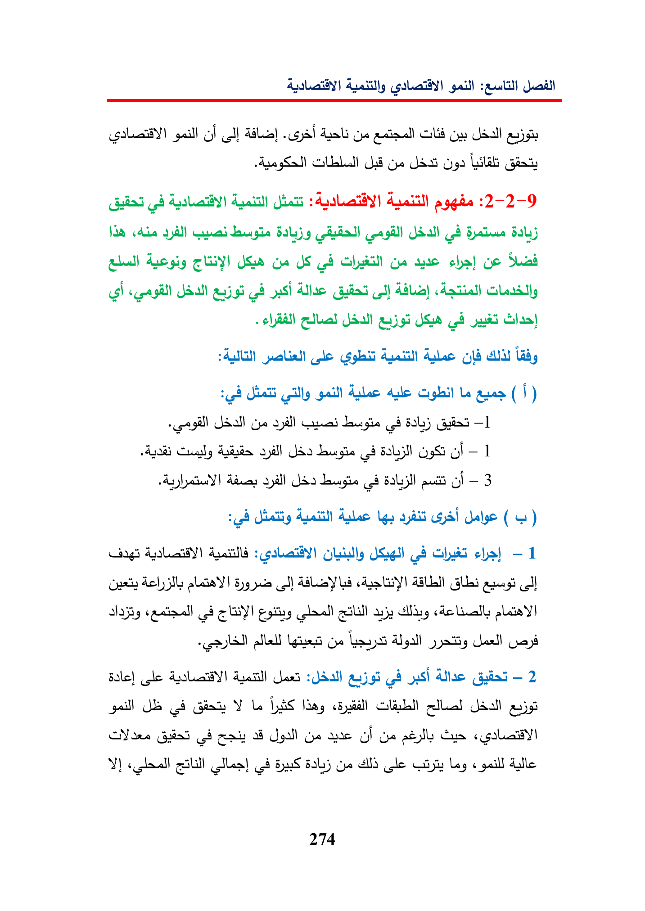

:euitillGbAbia)oS)AbGeacta)SUEGaUbyoJSO50Guiaheta:2-2-9VAR5b}GUY)GreJSGaatesha)GeSadpushJSjustileGobidubsCighillequer(1)+agillG0Gai(4BalGuia—]Ayaayill(8gSGi-1dicesayill(28aut—3UgsGS)(Apeiillacodchal—1artyihol)AdleyAssSY!Gsaang(aI)alae)alllies0LaysBale}gleAvilJordGdys)UlacGuia—2gallGeYLeUdallNorewalgallGeaneOFOsGusa(685a}GyeAld(cleasLag«paillAlle274